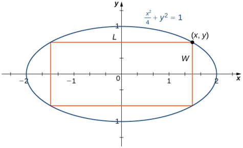

Rectangle Maximization
This is an example of the solution of constrained optimization using ALGLIB.js

A rectangle is to be inscribed in the ellipse
\[\frac{x^2}{4}+y^2=1\]
Find the maximum area of the rectangle.
Let \(x\) and \(y\) denote the intputs to a maximization function \(f(x,y)\) describing the area of the rectangle where \[f(x,y) = 2x*2y.\]
Subject to the equality: \[\frac{x^2}{4}+y^2-1=0\]